Test report 4 – Fillet, chamfer, shell and profile operations
1 Scope
Tested and completed: the display of the spec sections "Fillet and chamfer", "Boolean operations" (parameters fillet =/chamfer =), "Profile operations and surfaces", "Primitives/2D" and "Errors and warnings", plus two open items from phase A/B.
- fillet/chamfer line: zones blue and semi-transparent, selected edges orange, "n zones · m edges" at the end of the line (existing, now with a pixel check). New: cursor on a zone shows only that zone and only the edges of the block that lie in it (checked in the view against the zone meshes,
inside: all sample points,touch: one); a zone viatranslatewithout the outline/coordinate triads of the transformation. Empty selection yellow with "0 edges", failure red with a red edge and the body without fillet (engine);difference(fillet = r),$fillet/$chamfer,select = "touch"and nested blocks checked. - shell: like the zone block; new: the opened faces of the body are filled orange (faces of the body mesh that lie completely in a zone; count checked against the engine's
opened_faces), also with the cursor on a zone. - Profile operations (new):
linear_extrude– profile as outline at the bottom (at −h/2 withcenter), height handle at the top;rotate_extrude– profile in the xz plane, axis of rotation as a dashed line, angle handle on the ring;loft– all profiles as outlines at their location, result semi-transparent;sweep– path as a curve (cubic interpolation as in the kernel), handles at literal points, profile at the start point perpendicular to the start tangent;surface– control net as lines with handles, surface rendered double-sided;thicken– surface as outline, result full. cad-eval already supplied the handles (height, angle, path points, control net); new are a test for them and their display/check in the browser. - 2D shapes alone: outline with a light fill in the xy plane; the warning for a z deviation of grid points appears yellow at the end of the line.
- Refit: after a significant size change (diagonal × 1.6 or center moved by more than half the diagonal) the view refits itself as long as the user has not moved the camera (and not dragged a handle); otherwise the button "Refit" (German UI: „Neu einpassen“) appears.
- Axis-constrained dragging of point handles: Shift key – axis of the local coordinate system from the mouse movement; keys X/Y/Z – axis directly (press again: free), also in the middle of a drag. Guide line in the axis color, snapping only to targets on the axis, the other components keep their text.
- Examples (new, in the examples menu): griffschale.scad (shell), flasche.scad (rotate_extrude + fillet), lueftungsgitter.scad (linear_extrude + grid, chamfer =), kabelfuehrung.scad (sweep), freiformdeckel.scad (surface + thicken).
- Draft mode while dragging (engine state 58735e2): fillets that take longer than 25 ms are suspended by the engine while dragging (
NodeReport.blend_suspended). The status bar then shows "fillet suspended while dragging (line …)" (German UI: „Verrundung beim Ziehen ausgesetzt (Zeile …)“), the same hint appears at the end of the line; after release the engine evaluates fully and the hint disappears (C20). - Watchdog block (plan 7.3): the UI remembers the key of
currenton everyProgress. If the watchdog terminates the worker, the new worker receives{type: "BlockKeys", keys: […]}with all keys that have hung so far beforeSetSource(the list survives further restarts), and then the last source again; the blocked node reports "timeout, node blocked until the next change" (German UI: „Zeitüberschreitung, Knoten gesperrt bis zur nächsten Änderung“), its line is red (C19, unit test transport.test.ts). Without a newly blocked node the source is not resent, so that the same input does not hang again. - tools/report/report2-ui.mjs runs standalone again: if Vitest results are missing or the shared playwright.json contains no phase A scenarios (it only holds the last run), it runs these tests itself.
Changes to Rust crates: cad-session – scene nodes with op_info (resolved parameters of fillet/chamfer/shell incl. select, zone, linear_extrude, rotate_extrude, loft, sweep path, surface net, thicken), blend_suspended per node and suspended_blends in the statistics (from the engine's draft mode), protocol types regenerated; cad-eval – during free dragging, literals whose value does not change are not rewritten (otherwise axis-constrained dragging would round e.g. 5.5 to 6), tests for profile handles; compat-tests – expectations for the five new examples (the test requires one entry per file in examples/spec).
2 Test environment
| Operating system | Linux 6.18.44-fc-v140 (x64) |
|---|---|
| CPU | Intel(R) Xeon(R) Processor @ 2.80GHz · 4 cores |
| Node.js | v22.22.0 |
| Browser | Chromium 141.0.7390.37 (headless, Playwright 1.56.1) |
| Graphics | WebGL via SwiftShader (software rendering, no GPU) |
| Window | 1440 × 900 px, device pixel ratio 1 |
| Build | Vite 8.3.5 production build, preview server (vite preview) |
| Libraries | React 19.3.1, three.js 0.186.1, CodeMirror 6.43.15, Zustand 5.0.16, Vitest 5.0.5 |
| Engine | cad_wasm_bg.wasm 1.20 MiB, smlib.wasm 4.89 MiB (SMLib kernel, Emscripten) |
| Source | Branch worktree-agent-ab88fcc31de0a88e0, commit 36fb562 |
The end-to-end tests run against the production build with real mouse and keyboard events. Checks go through the test hook window.__cad (display plan, drawn edges by kind, zone/face check, camera, handles, editor text) and through pixels: for a layer (e.g. edge:selected, open-faces, mode:profile, guide:path) the pixels that change when the layer is hidden are counted.
3 Scenarios (Playwright, web/e2e/ui-c.spec.ts)
| ID | Scenario | Result | Duration | Checked |
|---|---|---|---|---|
| C01 | fillet line: zones blue, selected edges colored, count at end of line | passed | 4.1 s |
|
| C02 | Cursor on a zone: only this zone and its edges | passed | 3.0 s |
|
| C03 | Empty selection: line yellow, "0 edges" | passed | 2.3 s |
|
| C04 | Fillet failed: line red, edge red, body without fillet | passed | 2.7 s |
|
| C05 | difference(fillet = r) and $fillet on a primitive | passed | 3.2 s |
|
| C06 | select = "touch" and nested blocks | passed | 3.5 s |
|
| C07 | chamfer in all three forms | passed | 2.8 s |
|
| C08 | shell: zone blue, opened faces colored | passed | 4.1 s |
|
| C09 | linear_extrude: profile as outline at the bottom, height handle at the top | passed | 6.2 s |
|
| C10 | rotate_extrude: profile in the xz plane, axis of rotation, angle handle | passed | 8.4 s |
|
| C11 | loft: all profiles as outlines, result semi-transparent | passed | 3.1 s |
|
| C12 | sweep: path as a curve, handles at literal points, profile at the start point | passed | 6.5 s |
|
| C13 | surface and thicken: control net with handles, surface double-sided, surface as outline | passed | 9.0 s |
|
| C14 | 2D shapes alone: outline with fill, z deviation as a warning | passed | 2.5 s |
|
| C15 | Refit the view after a significant size change | passed | 4.0 s |
|
| C16 | Axis-constrained dragging of a point handle (Shift, X/Y/Z) | passed | 20.5 s |
|
| C17 | New examples in the menu | passed | 9.3 s | griffschale.scad: shell with zone g.oben, cable outlet via difference, screw bosses with difference(fillet = 0.5) (cursor line 12: full@12, blue@14) · flasche.scad: rotate_extrude of a polygon from grid points, fillet(3) with two zones, partial revolution 270° (cursor line 11: full@11, profile@12) · lueftungsgitter.scad: linear_extrude for frame and slots at indexed grid planes, difference(chamfer = 0.6) (cursor line 12: full@12, profile@12) · kabelfuehrung.scad: sweep of a U profile along a spline path made of grid points and literals, linear channel (cursor line 16: full@16, profile@17) · freiformdeckel.scad: surface from a 4 × 4 net (grid border, bulge as literals), thicken(2) (cursor line 11: full@11) |
| C19 | Watchdog: hanging node is blocked, line red, a change lifts the block | passed | 5.8 s |
|
| C20 | Draft mode: fillet suspended while dragging, computed afterwards | passed | 8.7 s |
|
| C18 | Measurements: evaluation time fillet, chamfer, shell, sweep, loft, surface | passed | 16.2 s | fillet(r) zone block, 4 edges: kernel 74 ms (median of 5), SetSource → scene 80 ms · difference(fillet = r), 4 holes: kernel 262 ms (median of 5), SetSource → scene 270 ms · chamfer, 12 edges ($chamfer): kernel 105 ms (median of 5), SetSource → scene 106 ms · shell(1.6) of a chamfered cuboid ($chamfer = 4): kernel 217 ms (median of 5), SetSource → scene 223 ms · sweep, spline path with 4 points: kernel 154 ms (median of 5), SetSource → scene 160 ms · loft, 3 profiles: kernel 22 ms (median of 5), SetSource → scene 28 ms · thicken(surface) 4 × 4: kernel 309 ms (median of 5), SetSource → scene 314 ms |
Regression in the same run: phase A (web/e2e/ui.spec.ts) 22 / 22, phase B (web/e2e/ui-b.spec.ts) 14 / 14 passed.
4 Unit and Rust tests
| Vitest file | passed | Failed |
|---|---|---|
| web/src/editor/decorations.test.ts | 7 / 7 | – |
| web/src/editor/editGroup.test.ts | 7 / 7 | – |
| web/src/editor/lang.test.ts | 47 / 47 | – |
| web/src/engine/transport.test.ts new | 2 / 2 | – |
| web/src/logic/context.test.ts | 5 / 5 | – |
| web/src/logic/curves.test.ts new | 5 / 5 | – |
| web/src/logic/display.test.ts extended | 23 / 23 | – |
| web/src/logic/drag.test.ts extended | 12 / 12 | – |
| web/src/logic/format.test.ts | 5 / 5 | – |
| web/src/logic/grids.test.ts | 5 / 5 | – |
| web/src/logic/handles.test.ts | 12 / 12 | – |
| web/src/logic/params.test.ts | 7 / 7 | – |
| web/src/logic/positions.test.ts | 5 / 5 | – |
| web/src/logic/sceneIndex.test.ts | 9 / 9 | – |
| web/src/logic/zones.test.ts new | 4 / 4 | – |
New: cubic path interpolation, start frame of the profile, point-in-mesh with tolerance, edges in a zone (inside/touch), opened faces, criterion for refitting. Extended: display plan for profile operations, zones and shell (fixture profile.scad from the real engine), axis-constrained dragging.
| Rust test program (cargo test --workspace) | passed | new/changed tests |
|---|---|---|
| tests/cli.rs | 7 / 7 | – |
| src/lib.rs | 5 / 5 | – |
| tests/draft.rs | 3 / 3 | – |
| tests/engine.rs | 24 / 24 | – |
| tests/spec_examples.rs | 4 / 4 | – |
| tests/expr.rs | 25 / 25 | – |
| tests/grids.rs | 14 / 14 | – |
| tests/handles.rs | 26 / 26 | profile_operation_handles, unchanged_literals_keep_their_text |
| tests/limits.rs | 8 / 8 | – |
| tests/openscad_compat.rs | 1 / 1 | – |
| tests/openscad_deviations.rs | 10 / 10 | – |
| tests/tree.rs | 24 / 24 | – |
| tests/render.rs | 4 / 4 | – |
| tests/protocol_ts.rs | 1 / 1 | – |
| tests/session.rs | 8 / 8 | – |
| tests/watchdog.rs | 2 / 2 | – |
| src/lib.rs | 16 / 16 | – |
| tests/openscad_compat.rs | 1 / 1 | – |
| tests/spec_models.rs | 1 / 1 | spec_models_stage1 |
| tests/tree_bounds.rs | 1 / 1 | – |
| tests/determinism.rs | 1 / 1 | – |
| tests/handles.rs | 1 / 1 | – |
| tests/kernel.rs | 33 / 33 | – |
5 Measurements
| Model | Kernel / total | Measurement |
|---|---|---|
| fillet(r) zone block, 4 edges | 74 ms / 80 ms | Kernel time of the complete scene / SetSource → scene in the app, median of 5 variants (individual kernel values 148, 75, 74, 64, 73 ms) |
| difference(fillet = r), 4 holes | 262 ms / 270 ms | Kernel time of the complete scene / SetSource → scene in the app, median of 5 variants (individual kernel values 311, 262, 275, 199, 212 ms) |
| chamfer, 12 edges ($chamfer) | 105 ms / 106 ms | Kernel time of the complete scene / SetSource → scene in the app, median of 5 variants (individual kernel values 161, 84, 105, 112, 91 ms) |
| shell(1.6) of a chamfered cuboid ($chamfer = 4) | 217 ms / 223 ms | Kernel time of the complete scene / SetSource → scene in the app, median of 5 variants (individual kernel values 225, 252, 217, 211, 186 ms) |
| sweep, spline path with 4 points | 154 ms / 160 ms | Kernel time of the complete scene / SetSource → scene in the app, median of 5 variants (individual kernel values 154, 129, 161, 145, 158 ms) |
| loft, 3 profiles | 22 ms / 28 ms | Kernel time of the complete scene / SetSource → scene in the app, median of 5 variants (individual kernel values 17, 24, 25, 22, 20 ms) |
| thicken(surface) 4 × 4 | 309 ms / 314 ms | Kernel time of the complete scene / SetSource → scene in the app, median of 5 variants (individual kernel values 294, 241, 324, 309, 362 ms) |
| Largest image file in the report | 148 KiB | JPEG, quality 82 |
Each variant has different parameters (no cache hit in the affected node). "Total" is SetSource until the complete scene in the worker, including language evaluation and tessellation; the times come from headless Chromium with SwiftShader on 4 cores.
6 Known limitations and deviations
- Edges of a zone, opened faces: the view checks against the tessellated zone meshes (tolerance 1.5 × chord error); the engine selects with the exact kernel classification. In borderline cases (edge exactly on a curved zone surface) the view can deviate; in the test, the count matches the engine.
- sweep path: the UI interpolates the curve with the same method as the SMLib facade (cubic, chord lengths, two extra points for three points); if the method in the kernel changes, the display deviates. The start frame follows sc_sweep (x = global X projected into the normal plane).
- Profile of linear_extrude/rotate_extrude: the mesh of the direct children is shown (2D, flat in their plane); z offsets of 2D transformations are lost, as in the engine.
- Zone via translate: the cursor on the zone shows only the zone and its edges, not the coordinate triad of the transformation (the spec line "Cursor on a zone" takes precedence); the handle at the zone center remains.
- Refit: automatic only as long as the camera has not been rotated/panned/zoomed since the last fit and no handle has been dragged; "Show all" and the standard views restore this state.
- Axis-constrained: axes of the handle's local coordinate system (only x/y for 2D points); with Shift the handle waits until 6 px of movement determine the axis. If the axis is only chosen during the drag, the axis line goes through the current position.
- An open surface next to bodies at the top level is an implicit union and thus an error ("thicken first") – as per spec, loaded separately in the test.
- Watchdog block: the node from the last
Progress.currentbefore the hang is blocked; what is blocked is its content key, so identical nodes elsewhere are blocked as well. The list applies until the page is reloaded; a change to the node changes the key and thereby lifts the block. - Draft mode: the hint shows the last drawn state; the threshold (25 ms) and the selection of suspended fillets are in the engine.
- Some results depend on the kernel: dose_shell.scad is currently red because of F1 (line red, body without shell); griffschale.scad therefore uses $chamfer = 4 (a correct hollow body on both platforms); tests C08, C17 and C18 additionally check that an "ok" node has geometry.
7 Bugs found in other crates
Not fixed (crates outside this task); minimal examples to reproduce in the browser or with cad check file.scad (cad-cli, native kernel).
F1 shell of a filleted body fails; message depends on the platform
grid g { z: o = 18; }
shell(1.6) { box([0, 0, 0], [90, 34, 18], $fillet = 3); zone(g.o, d = 1); }
shell(1.6) { box([0, 0, 0], [90, 34, 18], $fillet = 5); zone(g.o, d = 1); }
shell(1.6) { box([0, 0, 0], [90, 34, 18], $fillet = 6); zone(g.o, d = 1); }
// dimensions of examples/spec/dose_shell.scad (there with grid g { z: o = 30; }):
shell(1.5) { box([0, 0, 0], [50, 35, 30], $fillet = 4); zone(g.o, d = 1); }With the SMLib fork (tangency-labs/smlib, capi-tess @ 7eba8aa) each of these shells fails, in the browser (Wasm) as well as natively (cad check): $fillet = 3 with "SmApiShellBrepFull failed: SM_ERR_NULL_POINTER (1006)", $fillet = 5 and 6 with "wall thickness 1.6 leaves no cavity (SMLib returned no closed solid)" and "self-overlapping" respectively, the dimensions of dose_shell.scad with "self-overlapping solid at 10 face(s)" – dose_shell.scad is therefore red. For the same input the messages differ between Wasm and native ($fillet = 8: Wasm "self-overlapping", native SM_ERR (1001)). With the previous kernel state, $fillet = 5 reported "ok" with an empty result and $fillet = 6 "ok" without an outer wall; these silent errors no longer occur. Sharp-edged and chamfered bodies ($chamfer) give correct hollow bodies (griffschale.scad, measurement C18).
F2 surface(points) with 2 × 2 or 3 × 3 control points fails
surface(points = [[[0, 0, 0], [20, 0, 6]], [[0, 20, 6], [20, 20, 0]]]);
"surface gescheitert: SmApiCreateSurfaceFromOrderedPoints failed: SM_ERR (1001)" (surface failed), likewise for 3 × 3. cad-eval accepts 2 × 2 points and up, the spec names no minimum; 4 × 4 works. Suggestion: adapt the degree to the number of points (like interp_curve for three path points).
F3 Seam edges count as separate edges of a primitive
cylinder(h = 10, r = 5, $chamfer = 1); // "3 edges" sphere(5, $fillet = 1); // error
For the cylinder, the top, bottom and seam edges are selected ("3 edges", 3 drawn); for the sphere only the seam ("1 edge"), and the fillet fails with "fillet: none of the edges can be blended (smooth, seam or open edges)" – line red instead of "0 edges" or no effect. Smooth seam and pole edges should not be selected.
8 Screenshots and code excerpts
C01 fillet line
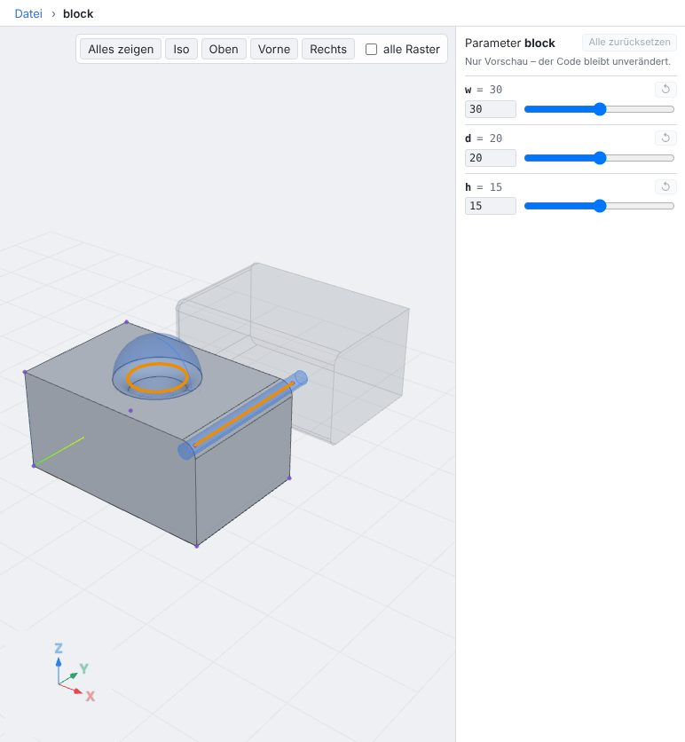
fillet(1) {
fillet(2) {
difference() {
box(g[links, vorne, boden], g[rechts, hinten, deckel]);
translate(p) cylinder(h = h + 1, r = 4);
}
zone(g[rechts, *, deckel], d = 2); // upper right edge
translate(p + [0, 0, h]) sphere(6); // top edge of the hole
}
zone(g.boden, d = 1); // all bottom edges (outer radius)
}fillet_zonen.scad, module block, cursor on fillet(2) (line 12): body full, rest dimmed; the two zones (cylinder around the grid line g[rechts, *, deckel] and the sphere above the hole) blue and semi-transparent, the two selected edges orange; "2 zones · 2 edges" at the end of the line.
C02 Cursor on a zone
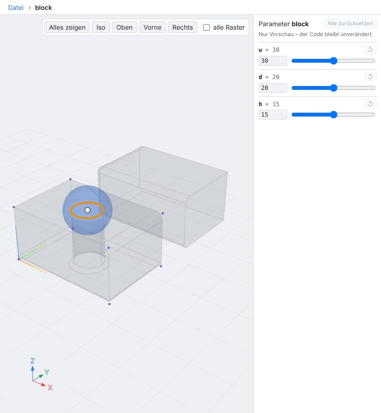
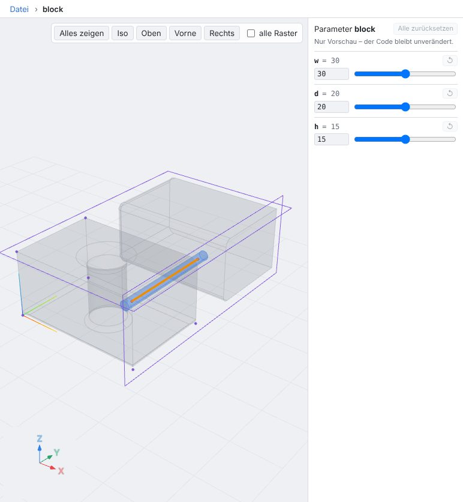
fillet(2) {
difference() {
box(g[links, vorne, boden], g[rechts, hinten, deckel]);
translate(p) cylinder(h = h + 1, r = 4);
}
zone(g[rechts, *, deckel], d = 2); // upper right edge
translate(p + [0, 0, h]) sphere(6); // top edge of the hole
}Cursor on a zone of the block fillet(2): only this zone is blue; of the two selected edges of the block, only the edge in this zone is orange (sphere: top edge of the hole; grid line: upper right edge). The handle at the zone center (translate) snaps to the grid (phase B, B10).
C03 Empty selection
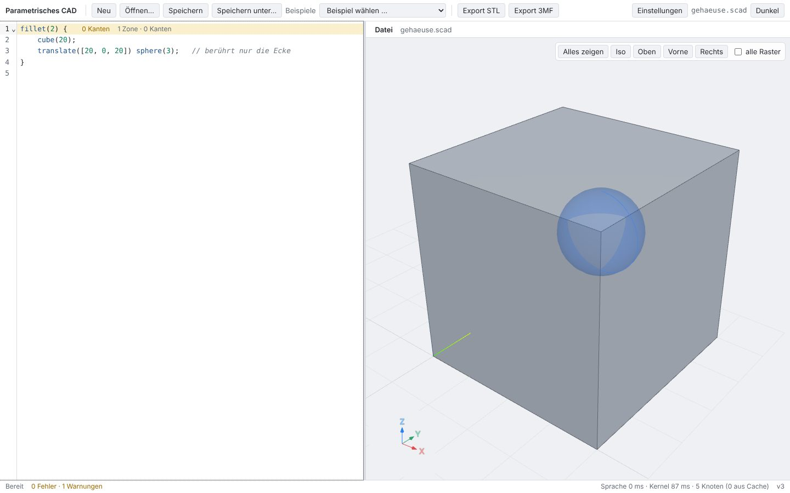
fillet(2) {
cube(20);
translate([20, 0, 20]) sphere(3); // touches only the corner
}The sphere touches the cube only at the corner, no edge lies completely in the zone: line 1 marked yellow, "1 zone · 0 edges" and the warning at the end of the line; the view shows the cube unchanged (warning, not an error).
C04 Fillet failed
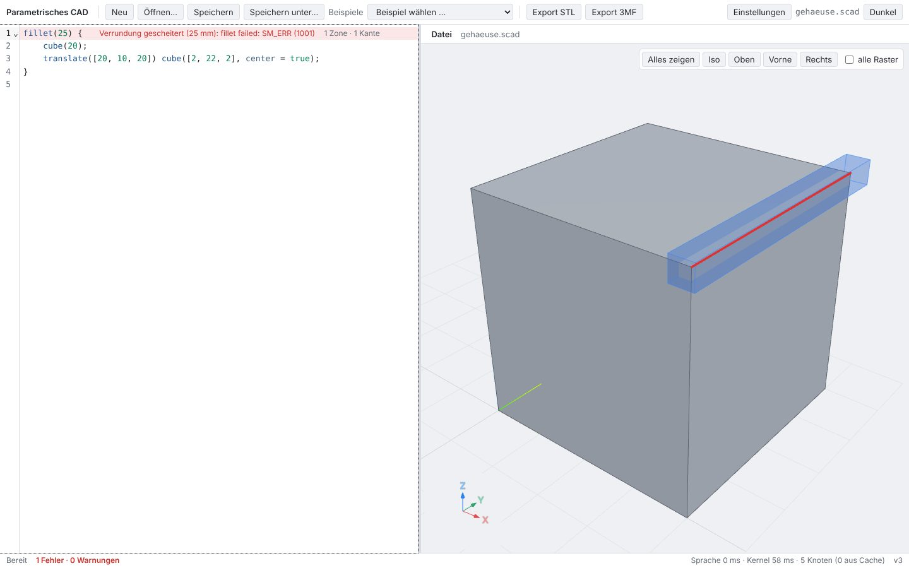
fillet(25) {
cube(20);
translate([20, 10, 20]) cube([2, 22, 2], center = true);
}fillet(25) on an edge of a 20 mm cube: line 1 red with the kernel message at the end of the line, the affected edge red; the view shows the cube without fillet (mesh of the node = mesh of the body, 12 triangles).
C05 fillet = on booleans, $fillet/$chamfer on primitives
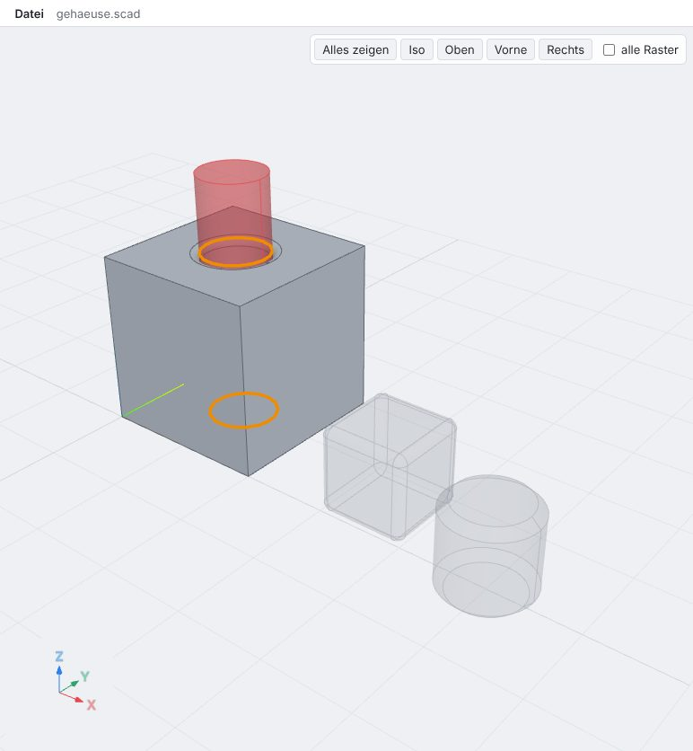
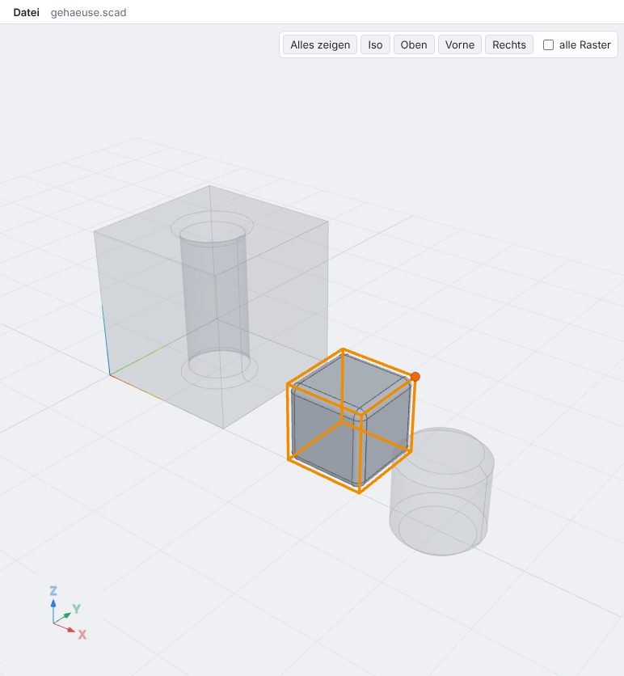
difference(fillet = 1) {
cube(20);
translate([10, 10, -1]) cylinder(h = 30, r = 4);
}
translate([30, 0, 0]) cube(10, $fillet = 1);
translate([50, 0, 0]) cylinder(h = 10, r = 5, $chamfer = 1);difference(fillet = 1): the two edges newly created by the hole orange, subtracted cylinder red and semi-transparent, "2 edges" at the end of the line. $fillet = 1 on the cube: all 12 own edges, "12 edges"; $chamfer = 1 on the cylinder: the edges the engine reports (3: top, bottom and the seam – see bugs found).
C06 select = "touch", nested blocks
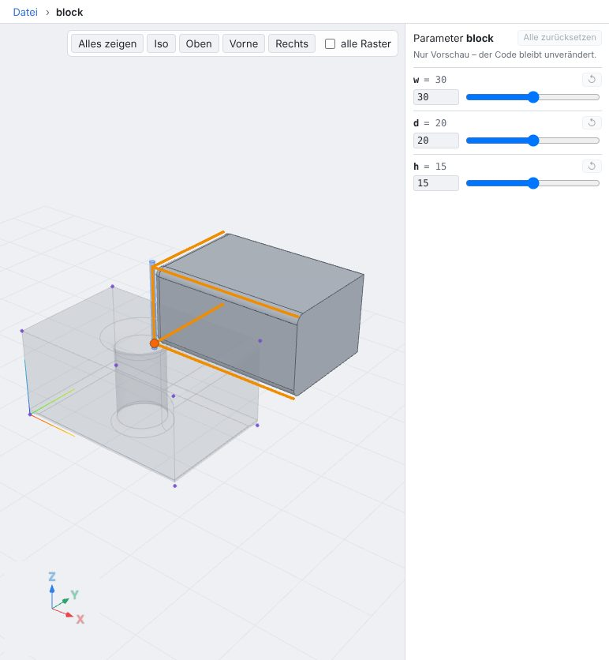
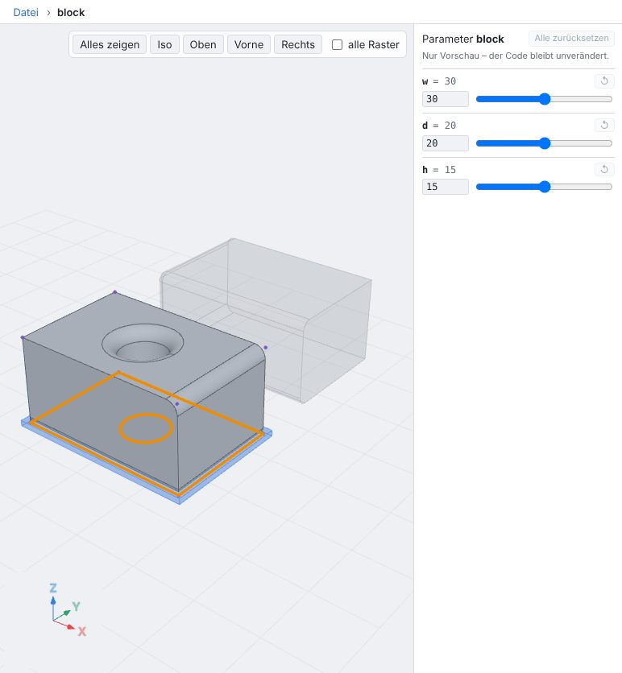
fillet(1) {
fillet(2) {
difference() {
box(g[links, vorne, boden], g[rechts, hinten, deckel]);
translate(p) cylinder(h = h + 1, r = 4);
}
zone(g[rechts, *, deckel], d = 2); // upper right edge
translate(p + [0, 0, h]) sphere(6); // top edge of the hole
}
zone(g.boden, d = 1); // all bottom edges (outer radius)
}
translate([0, d + 10, 0]) fillet(1.5, select = "touch") {
box(g[links, vorne, boden], g[rechts, hinten, deckel]);
zone(g[links, vorne, *], d = 1);
}select = "touch": the zone around the vertical grid line g[links, vorne, *] captures the vertical edge and the four edges touching it at its ends (along their full length), "5 edges"; cursor on the zone: all 5 in this zone. Nested: the inner block fillet(2) selects 2 edges, the outer fillet(1) with the zone g.boden the 5 bottom edges (four outer edges and the hole edge).
C07 chamfer
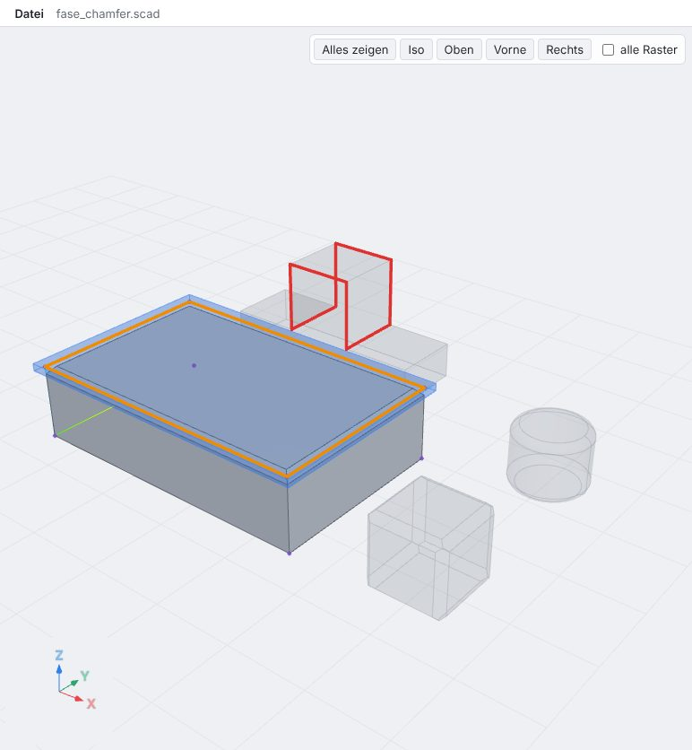
chamfer(1) {
box(g[a, v, u], g[b, h, o]);
zone(g.o, d = 1);
}
translate([0, 35, 0]) union(chamfer = 0.5) {
cube([30, 10, 5]);
translate([10, 0, 0]) cube([10, 10, 15]);
}
translate([50, 0, 0]) cube(10, $chamfer = 1);chamfer(1) { box; zone(g.o) }: the four top edges orange, zone blue; union(chamfer = 0.5) marks the intersection edges of the two cuboids, $chamfer = 1 the 12 cube edges.
C08 shell
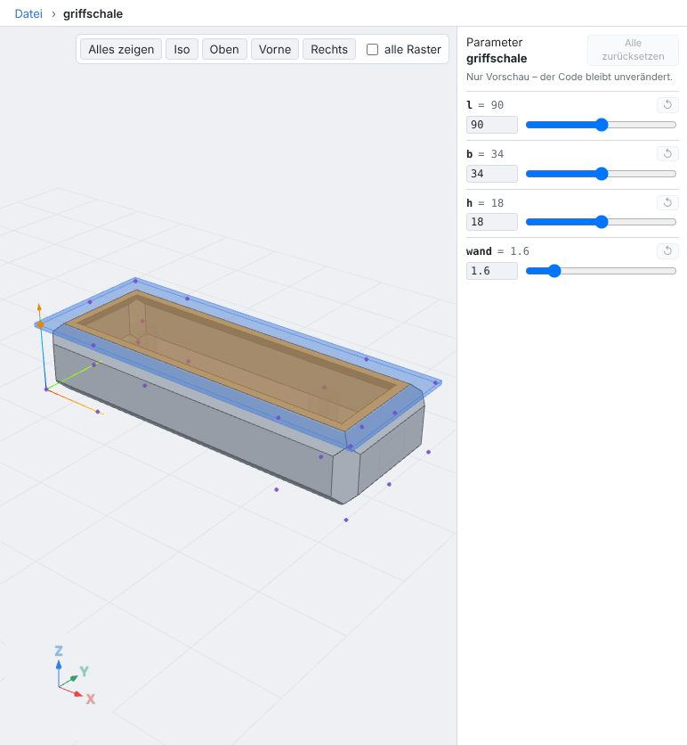
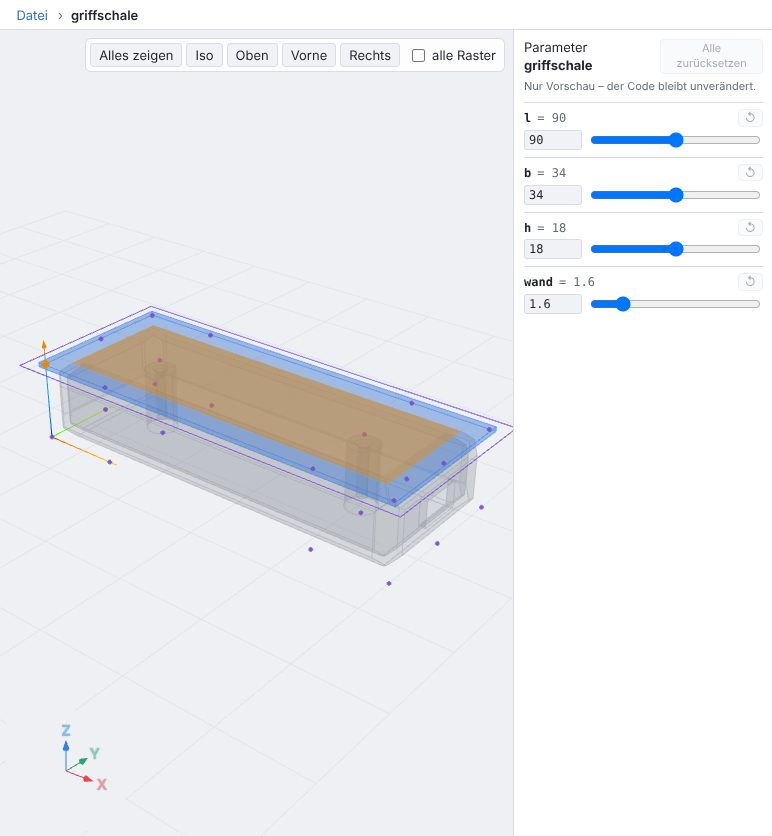
difference() {
shell(wand) {
box(g[hinten, links, boden], g[vorn, rechts, oben], $chamfer = 4);
zone(g.oben, d = 1); // lid side open
}
translate(g[vorn, mitte, 9]) cube([8, 10, 6], center = true); // cable outlet
}griffschale.scad (new), module griffschale: cursor on shell(wand): hollow body full, zone (plate around g.oben) blue, the opened top face of the body orange – determined in the view from the zone meshes (1 face, as the engine reports); "1 zone · 1 face opened" at the end of the line. Cursor on the zone: only this zone and its face.
C09 linear_extrude
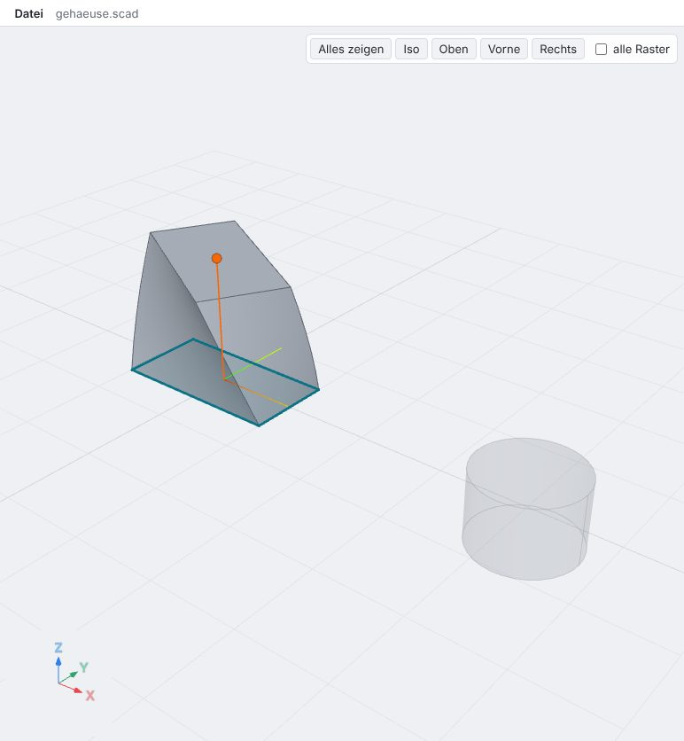
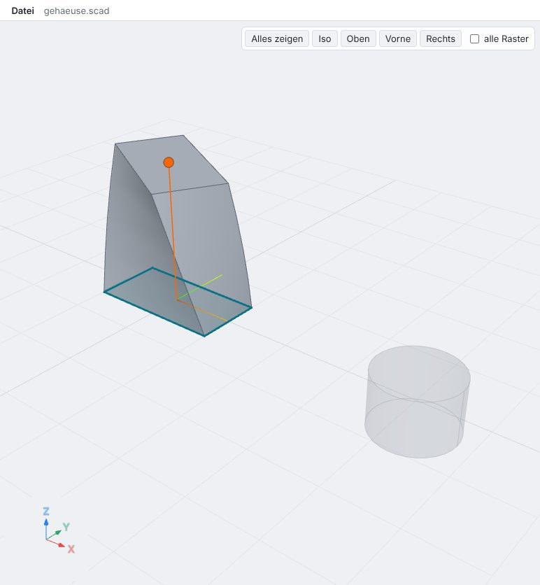
linear_extrude(height = 15, twist = 30)
translate([-10, -5]) square([20, 10]);
translate([40, 0, 0]) linear_extrude(8, center = true) circle(6);
// after dragging:
linear_extrude(height = 21, twist = 30)Cursor on linear_extrude: body full, the profile (rectangle) as outline in the profile color at the bottom in the xy plane, visible through the body; height handle at the top on the axis. Handle dragged upward with the mouse: height = 15 → 21. With center = true the outline lies at −h/2.
C10 rotate_extrude
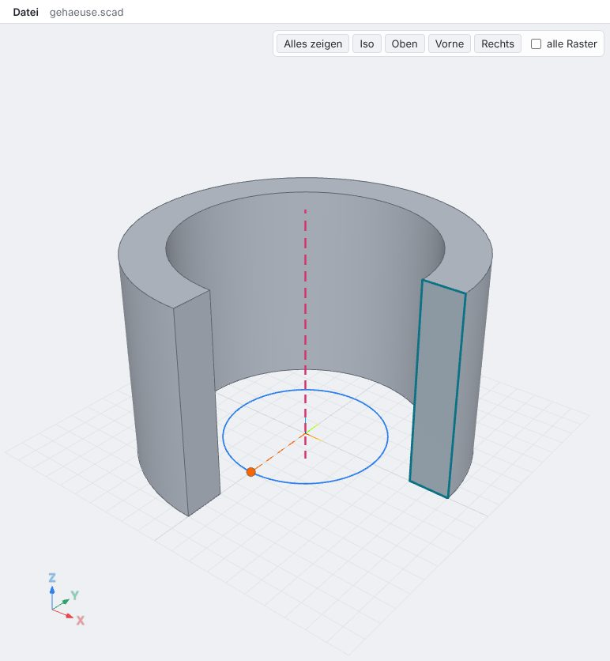
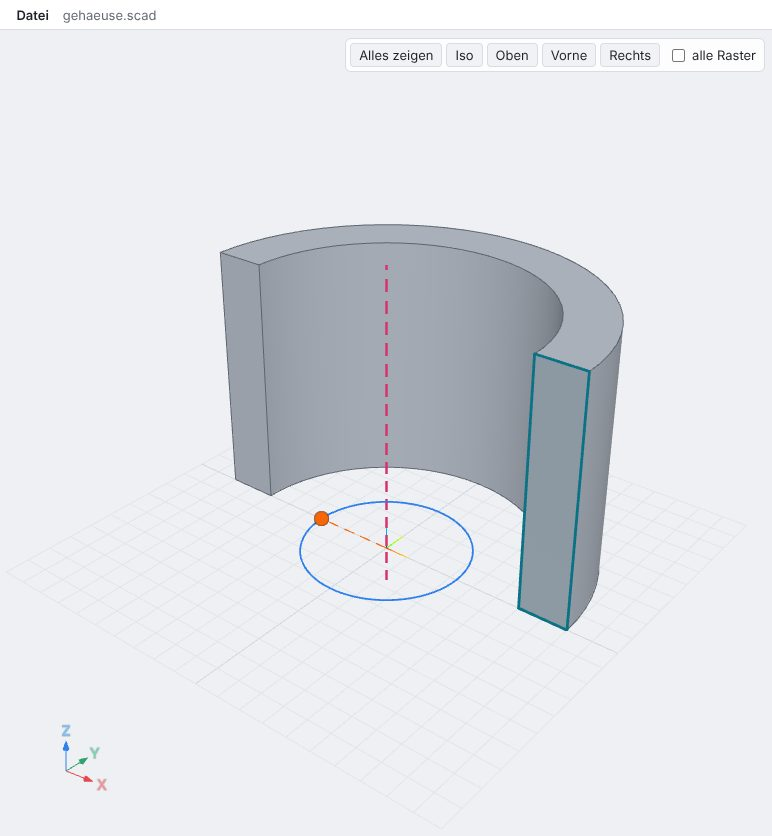
rotate_extrude(angle = 270)
translate([12, 0]) square([4, 20]);
// after dragging:
rotate_extrude(angle = 180)Cursor on rotate_extrude: body full, the profile (rectangle x = 12…16, y = 0…20) as outline in the xz plane (profile y becomes z), the axis of rotation z as a dashed line, the angle handle on the ring around z. Ring dragged to 180° with the mouse: angle = 270 → 180 (15° steps).
C11 loft
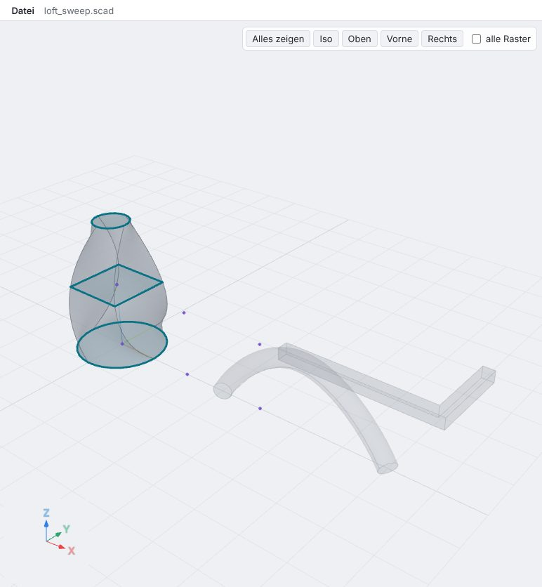
loft() {
circle(10);
translate([0, 0, 15]) square(14, center = true);
translate([0, 0, 30]) circle(4);
}loft_sweep.scad, cursor on loft(): result semi-transparent, all three profiles (circle at the bottom, square at z = 15, circle at z = 30) as outlines at their location.
C12 sweep
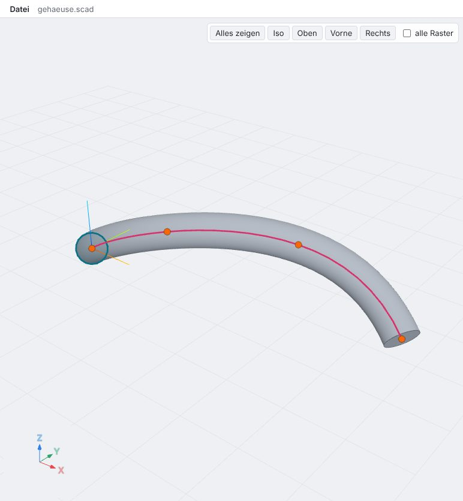
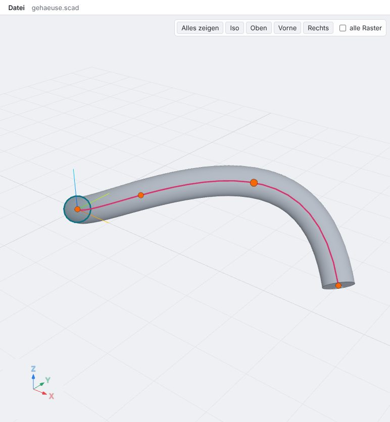
sweep(path = [[0, 0, 0], [20, 0, 10], [40, 10, 10], [60, 10, 0]], interp = "spline")
circle(3);
// after dragging:
sweep(path = [[0, 0, 0], [20, 0, 10], [39, 12, 14], [60, 10, 0]], interp = "spline")Cursor on sweep: path as a curve (cubic spline through the points as in the kernel, chord length parameterization), one handle at each literal point, the profile (circle) as outline at the start point perpendicular to the start tangent. The third point dragged freely with Alt: only this literal changes, curve and body follow.
C13 surface and thicken
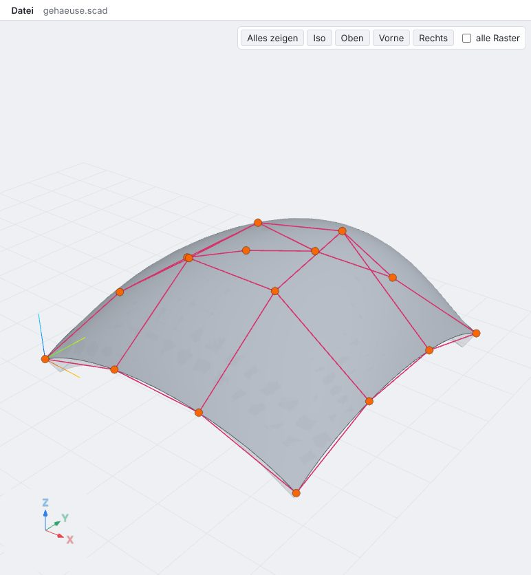
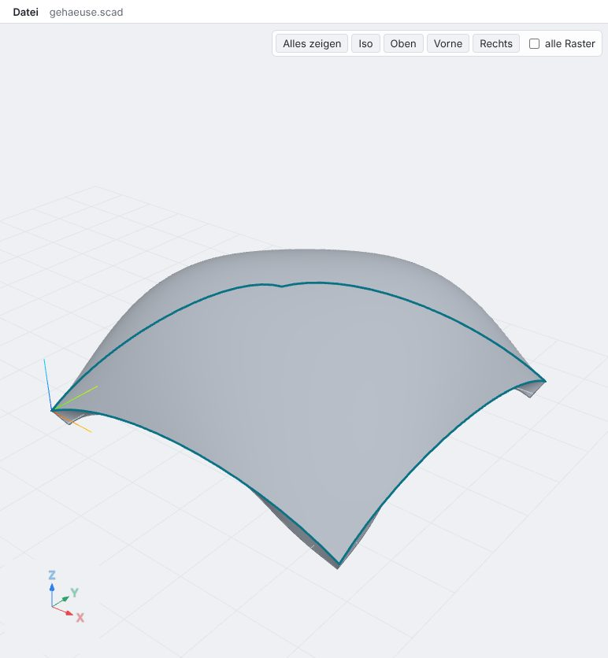
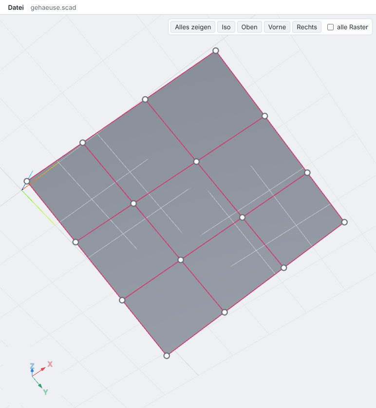
thicken(2)
surface(points = [
[[0, 0, 0], [10, 0, 3], [20, 0, 3], [30, 0, 0]],
[[0, 10, 3], [10, 10, 10], [20, 10, 10], [30, 10, 3]],
[[0, 20, 3], [10, 20, 10], [20, 20, 12], [30, 20, 3]],
[[0, 30, 0], [10, 30, 3], [20, 30, 3], [30, 30, 0]]
]);
// after dragging (line 4):
[[0, 10, 3], [9, 11, 12], [20, 10, 10], [30, 10, 3]],
// surface alone:
surface(points = [for (i = [0:3]) [for (j = [0:3]) [i * 8, j * 8, (i - 1.5) * (j - 1.5)]]]);Cursor on surface (4 × 4): control net (4 rows + 4 columns as lines) with a handle at each control point. An inner point dragged upward with Alt: only its literal changes. Cursor on thicken(2): result full, the surface as outline. An open surface alone (computed points, locked handles) is rendered double-sided: visible from above and from below.
C14 2D shapes alone
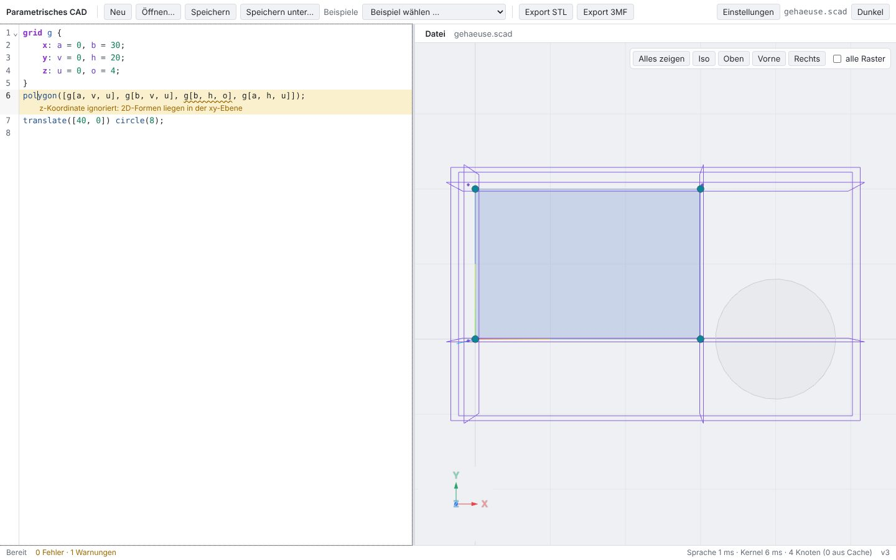
grid g {
x: a = 0, b = 30;
y: v = 0, h = 20;
z: u = 0, o = 4;
}
polygon([g[a, v, u], g[b, v, u], g[b, h, o], g[a, h, u]]);
translate([40, 0]) circle(8);Only 2D shapes: outline with a light fill in the xy plane (top view). The grid point g[b, h, o] has z = 4: line 6 yellow with "z coordinate ignored: 2D shapes lie in the xy plane" (German output: „z-Koordinate ignoriert: 2D-Formen liegen in der xy-Ebene“) at the end of the line.
C15 Refit the view
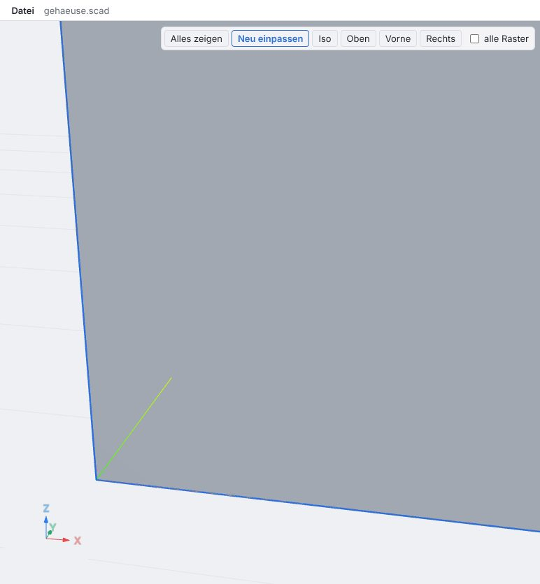
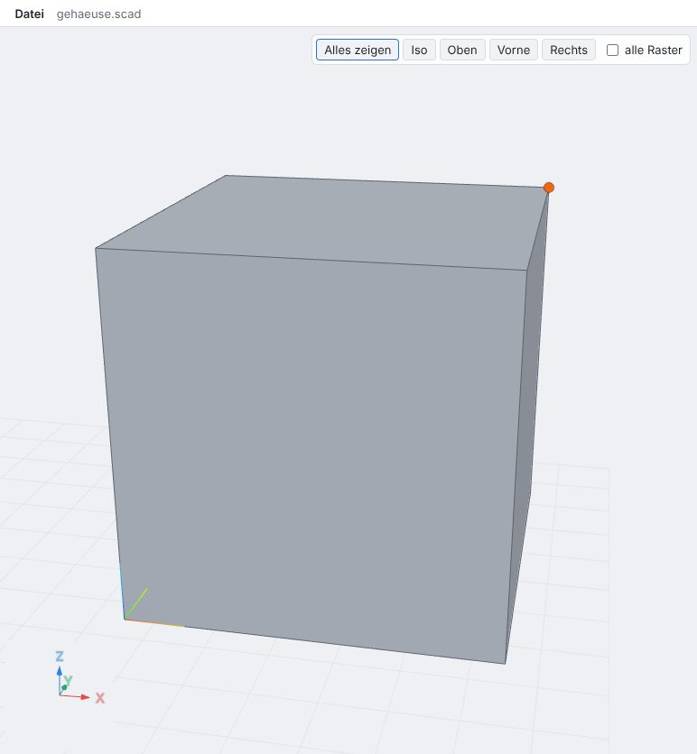
cube(10); → cube(60); → cube(62); → (rotate) → cube(300);
As long as the user has not moved the camera, the view is refitted after a significant size change (diagonal × 1.6 or center moved by more than half the diagonal): cube(10) → cube(60), camera distance 32 → 194 mm; cube(62) changes nothing. After rotating with the mouse, the camera stays put at cube(300) and "Refit" appears at the top; a click frames the model.
C16 Axis-constrained dragging
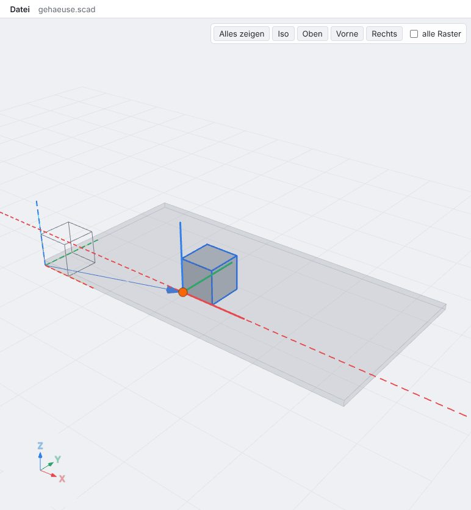
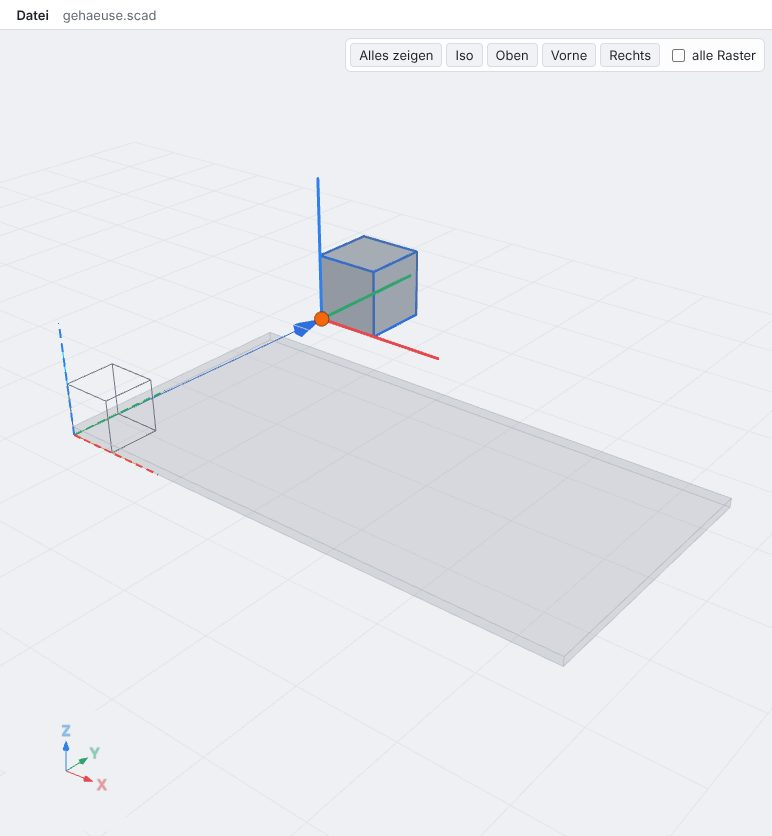
cube([60, 30, 1]); translate([10, 5.5, 2.25]) cube(6); // Shift + drag (diagonal, mostly x): translate([27, 5.5, 2.25]) cube(6); // first free, then key Z: translate([29, 7, 19]) cube(6);
With the Shift key held, the mouse movement determines the axis (the axis of the local coordinate system whose screen direction best matches the movement); the handle moves on a line in the axis color, only this component changes – y = 5.5 and z = 2.25 are kept as text (cad-eval does not rewrite unchanged literals). The keys X/Y/Z select the axis directly (press again: free), also in the middle of a drag: the axis line then goes through the current position, the other components keep their value; the keys do not reach the editor.
C17-flasche Example flasche.scad
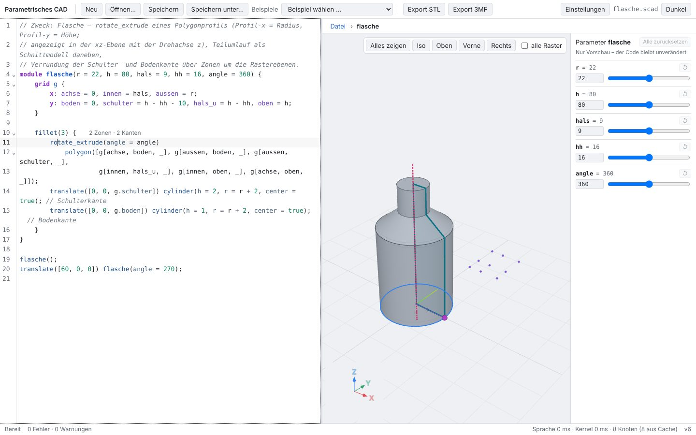
rotate_extrude of a polygon from grid points, fillet(3) with two zones, partial revolution 270°. Evaluated without errors; cursor in line 11.
C17-freiformdeckel Example freiformdeckel.scad
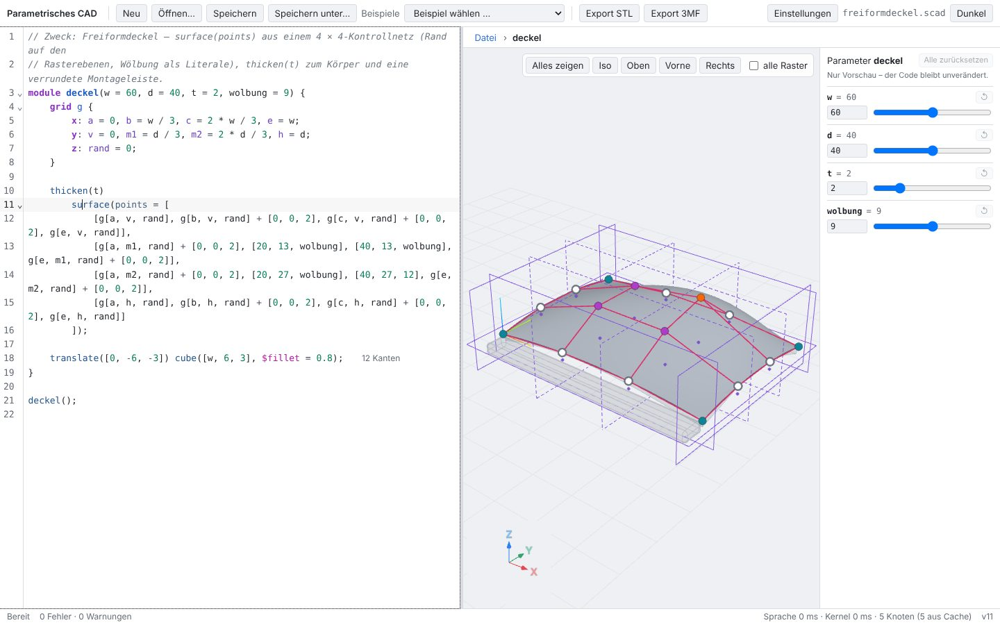
surface from a 4 × 4 net (grid border, bulge as literals), thicken(2). Evaluated without errors; cursor in line 11.
C17-griffschale Example griffschale.scad
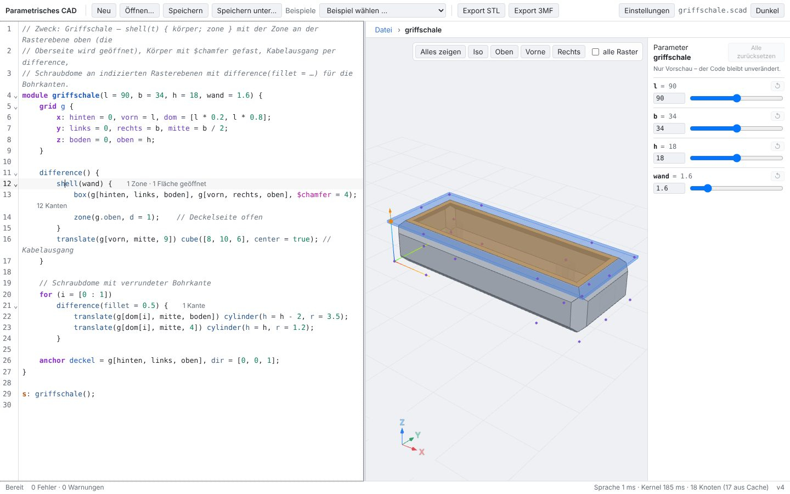
shell with zone g.oben, cable outlet via difference, screw bosses with difference(fillet = 0.5). Evaluated without errors; cursor in line 12.
C17-kabelfuehrung Example kabelfuehrung.scad
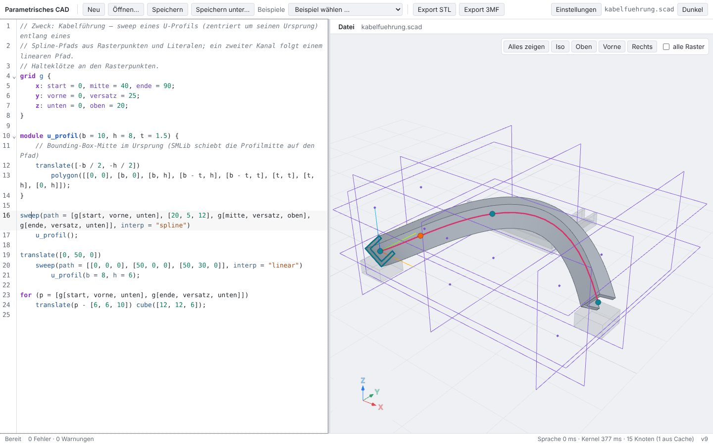
sweep of a U profile along a spline path made of grid points and literals, linear channel. Evaluated without errors; cursor in line 16.
C17-lueftungsgitter Example lueftungsgitter.scad
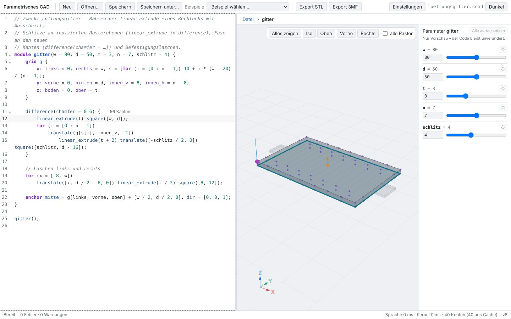
linear_extrude for frame and slots at indexed grid planes, difference(chamfer = 0.6). Evaluated without errors; cursor in line 12.
C19 Watchdog block
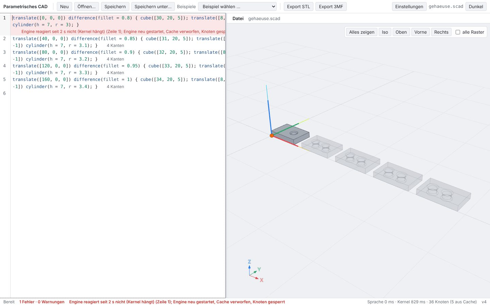
translate([0, 0, 0]) difference(fillet = 0.8) { cube([30, 20, 5]); translate([8, 10, -1]) cylinder(h = 7, r = 3); translate([20, 10, -1]) cylinder(h = 7, r = 3); }
// changed:
translate([0, 0, 0]) difference(fillet = 0.7) { cube([34, 20, 5]); translate([8, 10, -1]) cylinder(h = 7, r = 2.8); translate([20, 10, -1]) cylinder(h = 7, r = 2.8); }Watchdog set to 1.5 s (?watchdog=1500), the worker blocked for 4 s with __debugHang on the first Progress: the worker is terminated and restarted, the key of the node from Progress.current is blocked; before SetSource the new worker receives {type: "BlockKeys", keys: […]}. The node (translate) in line 1 reports "timeout, node blocked until the next change" (line red), the rest is evaluated. The content key is blocked: identical nodes in other lines would be blocked as well. After the line is changed it is computed normally; the list survives further restarts (unit test transport.test.ts).
C20 Draft mode while dragging
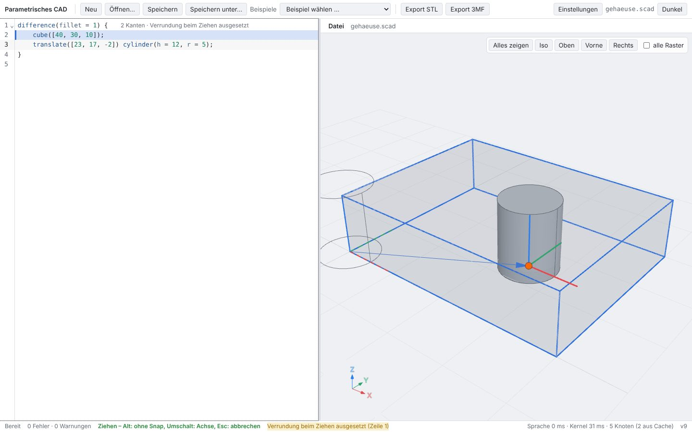
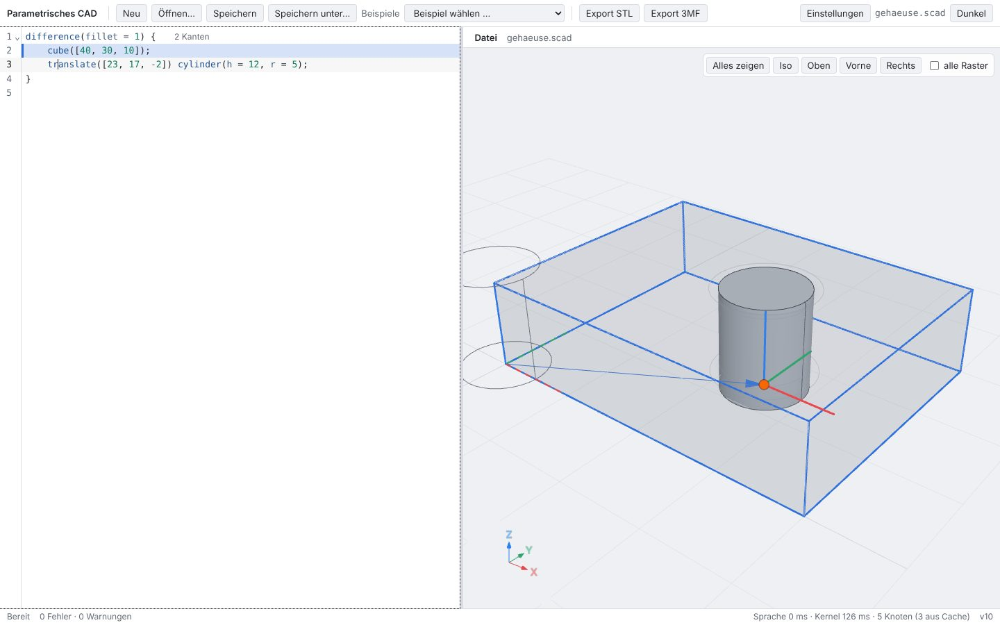
difference(fillet = 1) {
cube([40, 30, 10]);
translate([20, 15, -1]) cylinder(h = 12, r = 5);
}
// dragged: translate([23, 17, -2]) cylinder(h = 12, r = 5);While the cylinder handle is dragged, the fillet of difference(fillet = 1) is suspended (engine draft mode: fillets that take longer than 25 ms): the status bar shows "fillet suspended while dragging (line 1)", the same hint appears at the end of the line (NodeReport.blend_suspended, in the scene node as blend_suspended). After release the engine evaluates fully, hint and message disappear.